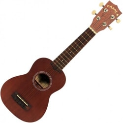
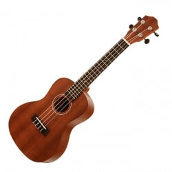
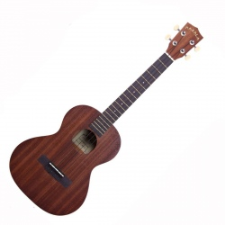
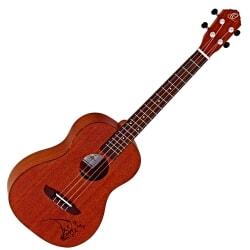

Moje hobby
Moje hobby Jest najmniejsze (długość około 53 cm) i wydaje typowy dla ukulele wysoki, cienki dźwięk. Kupując ukulele sopranowe, trzeba pamiętać o tym, że w związku z kompaktowym rozmiarem podstrunnicy progi są położone stosunkowo blisko siebie (dla porównania: dwa progi zajmują tyle samo miejsca, co pierwszy próg gitary typu Western). Nadają się raczej dla osób z drobniejszymi palcami lub na przykład jako pierwszy instrument dla dzieci.
 Niech nie zwiedzie Cię słowo „koncertowe” – to ukulele prawdopodobnie zadowoli najszerszą rzeszę miłośników gry na tym instrumencie. Ma większe pudło rezonansowe (długość instrumentu około 58 cm), oferuje głośniejszy, pełniejszy ton, a dzięki większym wymiarom prawdopodobnie będzie wygodniejsze do trzymania dla większości osób. Przestrzenie między progami pomieszczą też szersze palce, a dostęp do wyższych progów na podstrunnicy jest wygodniejszy. Ukulele koncertowe jest idealnym kompromisem między kompaktowym pudłem rezonansowym, klasycznym dźwiękiem ukulele i komfortem gry.
 Wybierz je, jeśli marzysz o większym instrumencie (długość około 66 cm) i masz ambicje, by nieustannie ulepszać swoją grę. Dzięki większemu pudłu rezonansowemu ukulele tenorowe brzmi znacznie wyraźniej i w porównaniu z dwoma pierwszymi zapewniany jest szerszy i mocniejszy ton. Podstrunnica jest idealna dla większych rąk i umożliwia delektowanie się finezyjną grą.
 Jest największe (długość 74 cm) i przypomina już małą gitarę. Nie oczekuj od niego klasycznego, wysokiego tonu. Jak sama nazwa wskazuje, dźwięk ukulele barytonowego jest raczej głębszy. Strój jest taki sam jak w przypadku pierwszych czterech (najcieńszych) strun na gitarze. Będzie zatem bliskie gitarzystom i łatwiej nauczą się na nim grać. Instrument może zainteresować swoim masywnym pudłem rezonansowym i dużymi odstępami między progami. Miłośnicy klasycznego tonu ukulele powinni zainteresować się raczej którymś z pierwszych trzech wariantów.
 Istnieją też różne specyficzne typy ukulele, jak na przykład ukulele basowe. Pod względem konstrukcji bazują na tradycyjnym kształcie ukulele i łączą to z różnymi niezwykłymi elementami konstrukcyjnymi. W przypadku ukulele basowego są to grube struny, które umożliwiają grę ze strojem odpowiadającym gitarze basowej – E, A, D, G.
Istnieją też różne specyficzne typy ukulele, jak na przykład ukulele basowe. Pod względem konstrukcji bazują na tradycyjnym kształcie ukulele i łączą to z różnymi niezwykłymi elementami konstrukcyjnymi. W przypadku ukulele basowego są to grube struny, które umożliwiają grę ze strojem odpowiadającym gitarze basowej – E, A, D, G.
| typ ukulele | cena od |
|---|---|
| sopranowe | 129,00 zł |
| koncertowe | 149,00 zł |
| tenorowe | 229,00 zł |
| barytonowe | 269,00 zł |
Kupując ukulele, warto nie zapomnieć też o ważnych akcesoriach, które mogą być przydatne.
Należą do nich:
Źródło: kytary.pl